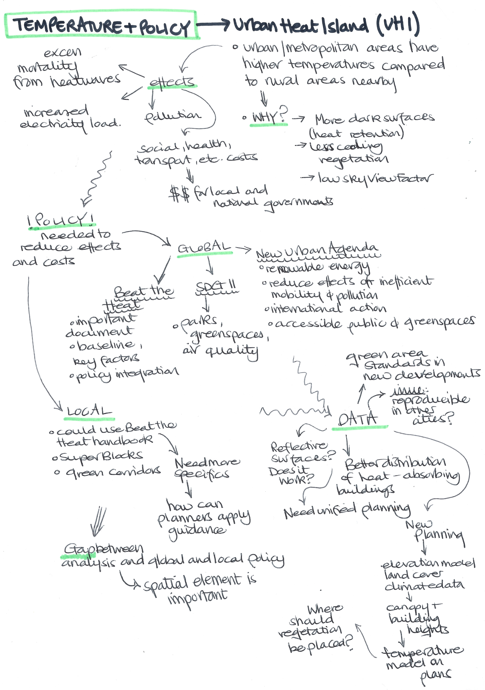
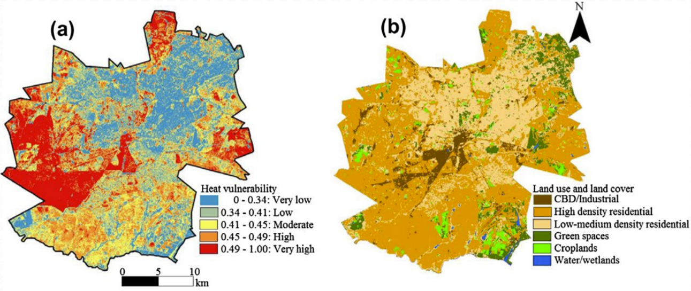

8 Week 8 - Temperature and policy
8.1 Summary
For the final summary of this learning diary, the content of this week is presented once again with a mind map! This one is presented slightly differently to the ones from week 1 and 3, and I think in some ways it is a big easier to follow as the information is top down rather than around the middle.
The practical made use of Landsat and MODIS data where collections could be merged to produce a mean temperature image and a time series could be plotted. It also included the workthrough of a method the BBC used to identify postcodes which were vulnerable to extreme heat using land surface temperature - in future these types of indices can be combined with other factors that influence temperature.
8.2 Applications
I found the heat vulnerability index really interesting so this application section focuses a lot on studies on this area. It is clear that the effects of UHI are widespread across different aspects of city life. I find the effect on health and wellbeing really interesting (as it is related to my dissertation in some ways, as mentioned in the reflection!). The UHI effects can exacerbate the effects of heatwaves, leaving specific at risk populations (such as older adults, young children, those who work outdoors and those in low income areas - especially due to issues with housing standards) more exposed (EPA, 2023). A study on Harare, Zimbabwe, highlighted how urbanisation can increase the UHI effect, and focused on heat vulnerability distribution for future policy planning (Mushore, et al., 2018). They used Lansat-8 multispectral imaging and found that 40% of the city suffered from high vulnerability, particularly amongst densely populated and low-income areas.

Another study looked at Hermosillo, Mexico, which experiences one of the highest number of heat related deaths in the country, and stated that the method used could be applied elsewhere and used by governments, particularly in regards to emergency preparedness (Navarro-Estupinan, et al., 2020).
It is clear that it is important in future studies to not only focus on the distribution of heat vulnerability alone, but also to look at exposures amongst different socioeconomic groups. It is also important to understand which groups and therefore individuals in the population may have a higher risk of adverse health effects from exposure to extreme heat. Further, policy must be targeted to areas which are experiencing more frequent and severe heatwaves.
8.3 Reflection
This lecture was one of the ones I was most interested in, as it relates in part to my dissertation! My dissertation addresses climate change (including exposure to extreme heat such as heatwaves) during pregnancy on maternal health outcomes. I must admit, I had not actually thought about the heat in urban areas in the context of my dissertation as I was thinking more towards rural areas where physical access to healthcare is more of a barrier - however, I think investigating this issue within cities and understanding if the UHI effect is relevant would be really interesting.
Based on the lecture and how the UHI is not explicitly mentioned in the SDGs, and from other modules and things I have noted, I feel that the SDGs must be adapted in future to have a sort of sub-section for cities and rural areas separately as I feel a lot of the targets are general and not necessarily adaptable to each area – in this way city specific frameworks could be focused on and UHI could be mitigated against more directly, offering a more focused global approach to it. In the future, I think it is important to try and fully understand the effects of different policies and if there are successful. As mentioned in the lecture – measures that work in one place may not work elsewhere – personally, I think this is really key in future work in this area as cities are structured entirely differently, with different building types and varying climates, amongst many other factors which could affect the UHI effect. Future frameworks could provide recommendations for specific city types or for sub-continental regions.
8.4 References
Mushore, T., Mutanga, O., et al. (2018) ‘Determining extreme heat vulnerability of Harare Metropolitan City using multispectral remote sensing and socio-economic data’, Journal of Spatial Science, 63, 1, pp. 173-191
Navarro-Estupinan, J., Robles-Morua, A., et al. (2020) ‘Heat risk mapping through spatial analysis of remotely-sensed data and socioeconomic vulnerability in Hermosillo, México’, Urban Climate, 31
United States Environmental Protection Agency (EPA) (2023) ‘Heat Island Impacts’, available at: https://www.epa.gov/heatislands/heat-island-impacts#_ftn6 (accessed: 20.3.23)